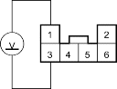
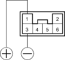

- Measure the voltage between the No. 1 and No.3 terminals of the shift lock solenoid/D3 switch connector with pressing the brake pedal.
SHIFT LOCK SOLENOID/D3 SWITCH CONNECTOR
SHIFT LOCK SOLENOID + (YEL/RED)

SHIFT LOCK SOLENOID – (YEL/BLK)
Wire side of female terminals
Is there battery voltage with pressing the brake pedal?
YES - Go to step 28.
NO - Check for an open in shift lock solenoid ground wire between the No. 3 terminal of the shift lock solenoid/D3 switch connector and the multiplex control unit. If the wire is OK, check for an opeNmultiplex control unit ground wire and poor ground. 
- Connect the No. 1 terminal of the shift lock solenoid/D3 switch connector to the battery positive terminal and connect the No. 3 terminal to the battery negative terminal. Check that the shift lock solenoid operates.
NOTE: Do not connect the No. 3 terminal to the battery positive terminal or you will damage the diode inside the shift lock solenoid.
SHIFT LOCK SOLENOID/D3 SWITCH CONNECTOR

Terminal side of male terminals
Does the shift lock solenoid operate properly?
YES - Check for shift lever shift lock mechanism. If necessary, substitute a known-good multiplex control unit and recheck.
NO - Replace the shift lock solenoid.